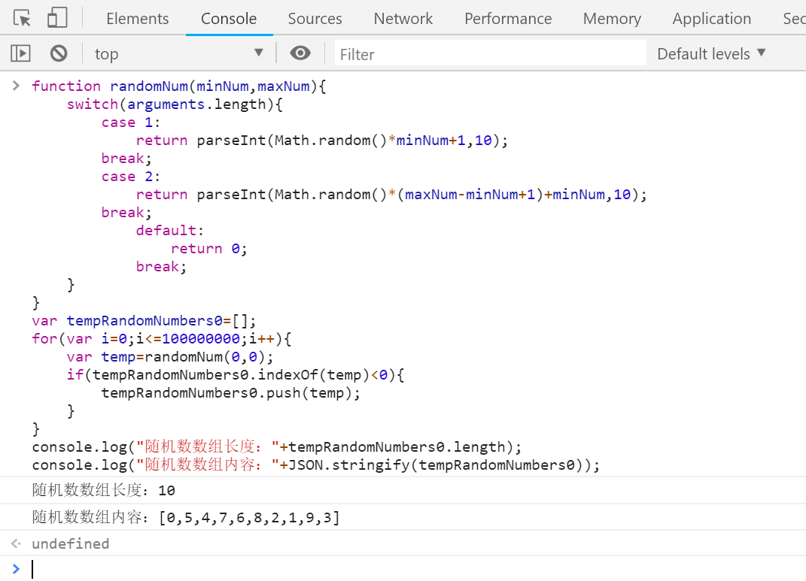
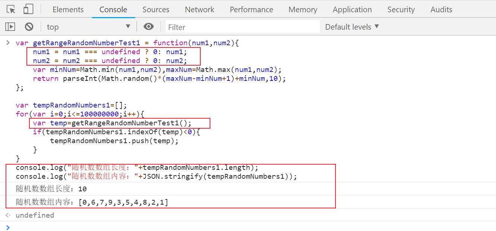
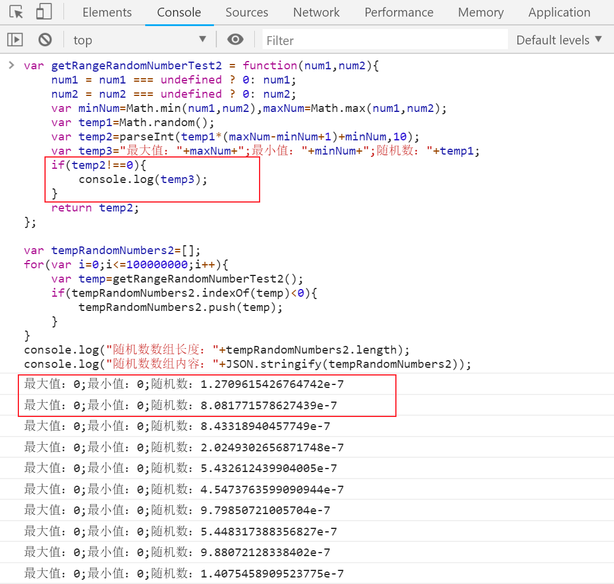
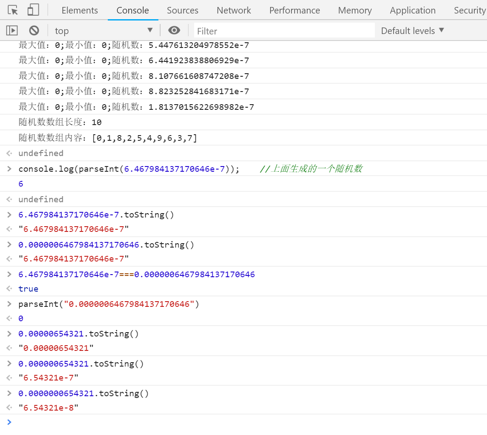
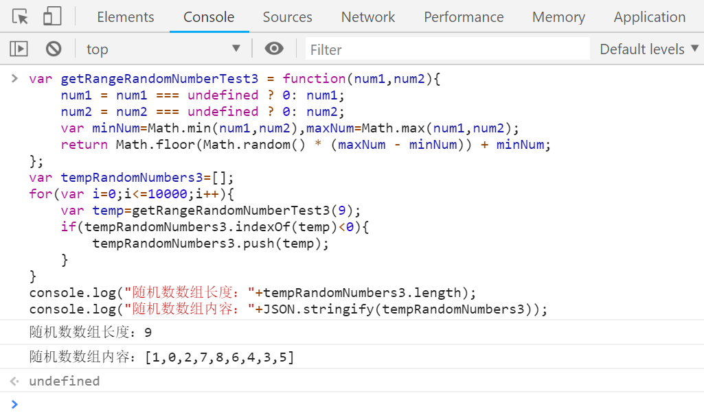
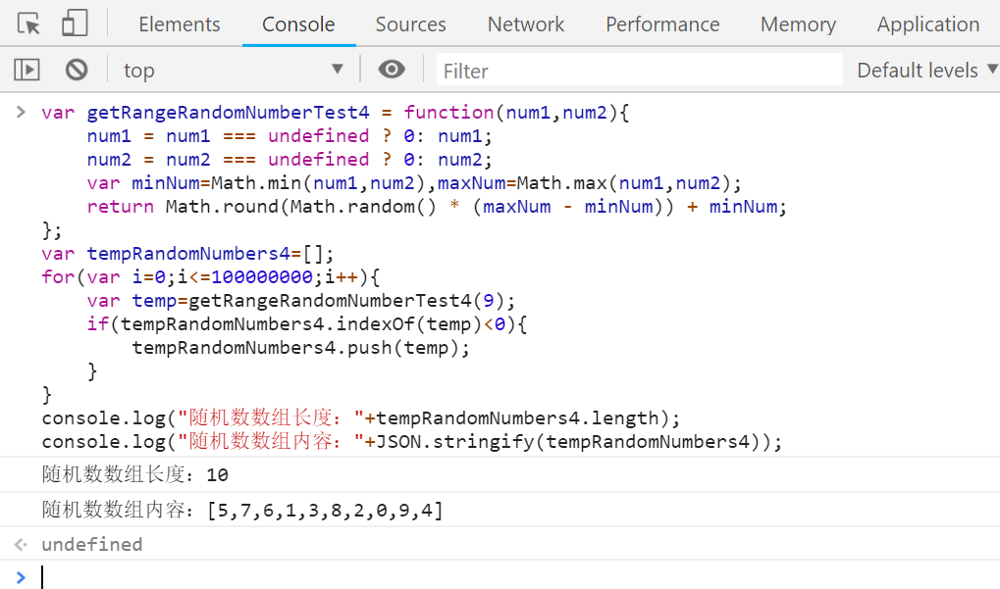
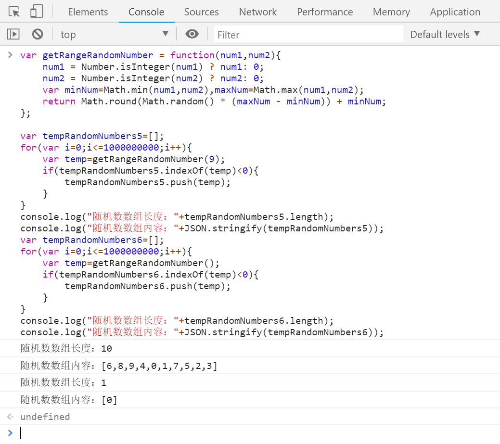

前几天想伪造一些数据，用到了随机数，没有自己写，便在网上找了一下，找到了这篇文章：https://www.cnblogs.com/starof/p/4988516.html 。之后测试了一下，发现了一个关于parseInt的问题。最后发现造成问题的原因是对该方法不够了解，下面详细说一下具体的过程。
上文中连接中的随机数方法是这样的（并添加一些测试代码）：

var temp=randomNum(0,0); 这样调用链接中的方法，按照方法中的逻辑应该永远返回0才对，为什么还包含其他的数字……下面是一步一步的测试。
一、我先修改了一下上面的方法，我想要的效果是可以传入0-2个参数，并且参数大小不分先后：
// 获取随机数测试1
var getRangeRandomNumberTest1 = function(num1,num2){
num1 = num1 === undefined ? 0: num1;
num2 = num2 === undefined ? 0: num2;
var minNum=Math.min(num1,num2),maxNum=Math.max(num1,num2);
return parseInt(Math.random()*(maxNum-minNum+1)+minNum,10);
};
var tempRandomNumbers1=[];
for(var i=0;i<=100000000;i++){
var temp=getRangeRandomNumberTest1();
if(tempRandomNumbers1.indexOf(temp)<0){
tempRandomNumbers1.push(temp);
}
}
console.log("随机数数组长度："+tempRandomNumbers1.length);
console.log("随机数数组内容："+JSON.stringify(tempRandomNumbers1));看一下测试结果：

这次结果没有什么意外，和上面的一样。
二、我想看一下，用这种方式调用，什么条件下返回结果不为0，下面是测试2：
// 获取随机数测试2
var getRangeRandomNumberTest2 = function(num1,num2){
num1 = num1 === undefined ? 0: num1;
num2 = num2 === undefined ? 0: num2;
var minNum=Math.min(num1,num2),maxNum=Math.max(num1,num2);
var temp1=Math.random();
var temp2=parseInt(temp1*(maxNum-minNum+1)+minNum,10);
var temp3="最大值："+maxNum+";最小值："+minNum+";随机数："+temp1;
if(temp2!==0){
console.log(temp3);
}
return temp2;
};
var tempRandomNumbers2=[];
for(var i=0;i<=100000000;i++){
var temp=getRangeRandomNumberTest2();
if(tempRandomNumbers2.indexOf(temp)<0){
tempRandomNumbers2.push(temp);
}
}
console.log("随机数数组长度："+tempRandomNumbers2.length);
console.log("随机数数组内容："+JSON.stringify(tempRandomNumbers2));同样再看一下测试结果：

console.log(parseInt(6.467984137170646e-7)); //上面生成的一个随机数 //输出结果：6 这里发现了一些问题，返回结果不为0的时候，生成的随机数都特别小；之后查了一下parseInt函数的定义和语法
//定义
parseInt() 函数可解析一个字符串，并返回一个整数。
//语法
parseInt(string, radix)parseInt函数的第一个参数是字符串，那执行parseInt(6.467984137170646e-7)的过程应该是先将6.467984137170646e-7转成一个字符串
6.467984137170646e-7.toString() //输出结果："6.467984137170646e-7"
0.0000006467984137170646.toString() //输出结果："6.467984137170646e-7"
6.467984137170646e-7===0.0000006467984137170646 //输出结果：true这时结果就要浮出水面了。在数字中6.467984137170646e-7，"e"有特定的含义。但是"6.467984137170646e-7"就是一个字符串，其中"e"没有什么特殊含义，不能表示10的几次幂，和其他的字符没有什么区别。
parseInt("0.0000006467984137170646") //输出结果：0 //这个结果是我们想要的结果看到结果，现在问题应该是0.0000006467984137170646转为字符串的问题了
0.00000654321.toString() //输出结果："0.00000654321"
0.000000654321.toString() //输出结果："6.54321e-7"
0.0000000654321.toString() //输出结果："6.54321e-8"
问题就在这里，Math.random()生成的随机数特别小时（小数点后面有连续的>=6个0时），这个小数会用科学计数法表示……
既然这样调用有问题（虽然是非常规调用），我想在换一种方式获取随机数。
三、下一种获取随机数的方法：
// 获取随机数测试3
var getRangeRandomNumberTest3 = function(num1,num2){
num1 = num1 === undefined ? 0: num1;
num2 = num2 === undefined ? 0: num2;
var minNum=Math.min(num1,num2),maxNum=Math.max(num1,num2);
return Math.floor(Math.random() * (maxNum - minNum)) + minNum;
};
var tempRandomNumbers3=[];
for(var i=0;i<=10000;i++){
var temp=getRangeRandomNumberTest3(9);
if(tempRandomNumbers3.indexOf(temp)<0){
tempRandomNumbers3.push(temp);
}
}
console.log("随机数数组长度："+tempRandomNumbers3.length);
console.log("随机数数组内容："+JSON.stringify(tempRandomNumbers3));看一下测试结果：

这次测试，getRangeRandomNumberTest3(9)，是这样调用的，本意想生成0-9的随机数，这里缺少了9，应该是Math.floor的问题，那就在换一个……
四、再换一种获取随机数的方法：
// 获取随机数测试4
var getRangeRandomNumberTest4 = function(num1,num2){
num1 = num1 === undefined ? 0: num1;
num2 = num2 === undefined ? 0: num2;
var minNum=Math.min(num1,num2),maxNum=Math.max(num1,num2);
return Math.round(Math.random() * (maxNum - minNum)) + minNum;
};
var tempRandomNumbers4=[];
for(var i=0;i<=100000000;i++){
var temp=getRangeRandomNumberTest4(9);
if(tempRandomNumbers4.indexOf(temp)<0){
tempRandomNumbers4.push(temp);
}
}
console.log("随机数数组长度："+tempRandomNumbers4.length);
console.log("随机数数组内容："+JSON.stringify(tempRandomNumbers4));再看一下测试结果：

这次结果很是满意，达到了想要的结果……作为最终版，再将方法完善一下：
var getRangeRandomNumber = function(num1,num2){
num1 = Number.isInteger(num1) ? num1: 0;
num2 = Number.isInteger(num2) ? num2: 0;
var minNum=Math.min(num1,num2),maxNum=Math.max(num1,num2);
return Math.round(Math.random() * (maxNum - minNum)) + minNum;
}; 下面看一下最终版的测试截图：

至此，这篇笔记就结束了，谢谢大家！